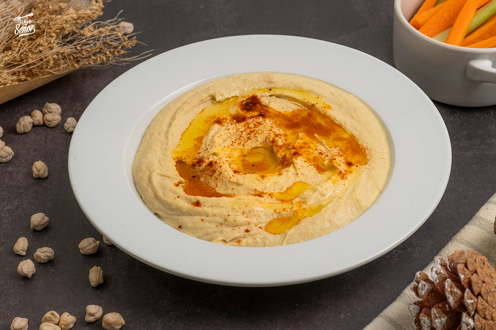

Ingredientes
- 500 gr de garbanzos cocidos
- 3 cucharadas soperas de tahina
- 2 cucharadas soperas de aceite de oliva virgen extra
- Sal
- Pimienta
- Comino molido (una pizca)
- Zumo de 1 limón
- 2 dientes de ajo
- Perejil fresco
Receta a seguir
- Comenzamos haciendo la pasta de tahina. Para ello, ponemos en un procesador de alimentos el sésamo tostado, añadimos un poco de agua y la pizca de sal. Trituramos hasta conseguir una pasta. Si la textura es demasiado espesa, incorporamos un poquito más de agua, pero cuidado, no queremos que quede demasiado líquida. Reservamos.
- Ponemos en el procesador los garbanzos cocidos, el aceite de oliva, los ajos, el zumo de limón y trituramos hasta obtener una masa espesa y sin grumos.
- Incorporamos el comino en polvo, salpimentamos y, por último, añadimos la tahina. Volvemos a triturar hasta que todos los ingredientes estén perfectamente integrados.
- Dejamos enfriar en el frigorífico o, si lo preferimos, lo comemos directamente.
- Colocamos en un plato o bowl y rociamos con un chorreoncito de aceite de oliva virgen extra, perejil picado, comino en grano o pimentón. En la variedad está el gusto.